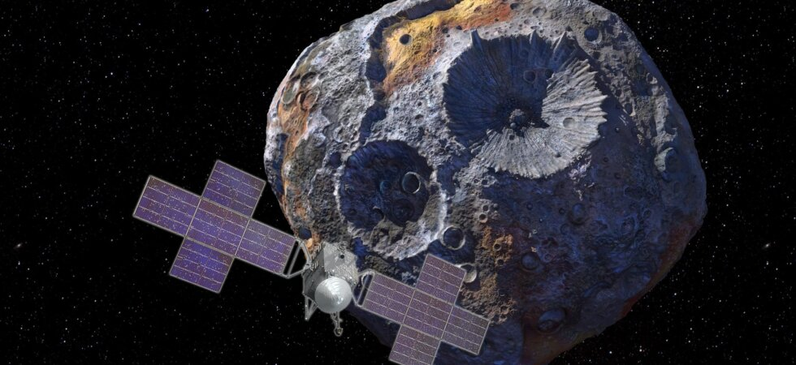
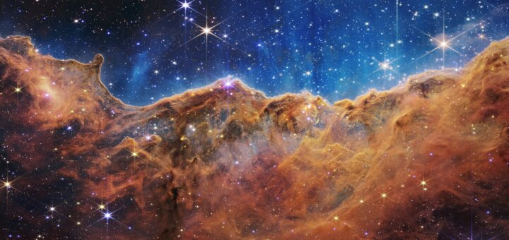
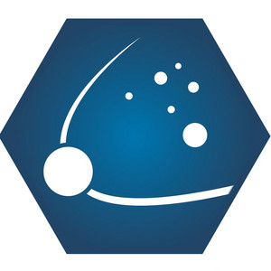

PODBÓJ KOSMOSU
/ TELESKOPY 13/07/2022Kosmiczny Teleskop Jamesa Webba – pierwsze zdjęcia naukowe
Świat się zachwycił! Naukowcy z zespołu Kosmicznego Teleskopu Jamesa Webba, ponad 7 miesięcy po wyniesieniu teleskopu w przestrzeń kosmiczną w końcu mogli zaprezentować pierwsze właściwe, naukowe zdjęcia wykonane za jego pomocą. Teraz mamy mniej...
PODCAST


#003 Dlaczego do Merkurego trudniej dotrzeć niż na Plutona?·10 lip·Puls Kosmosu